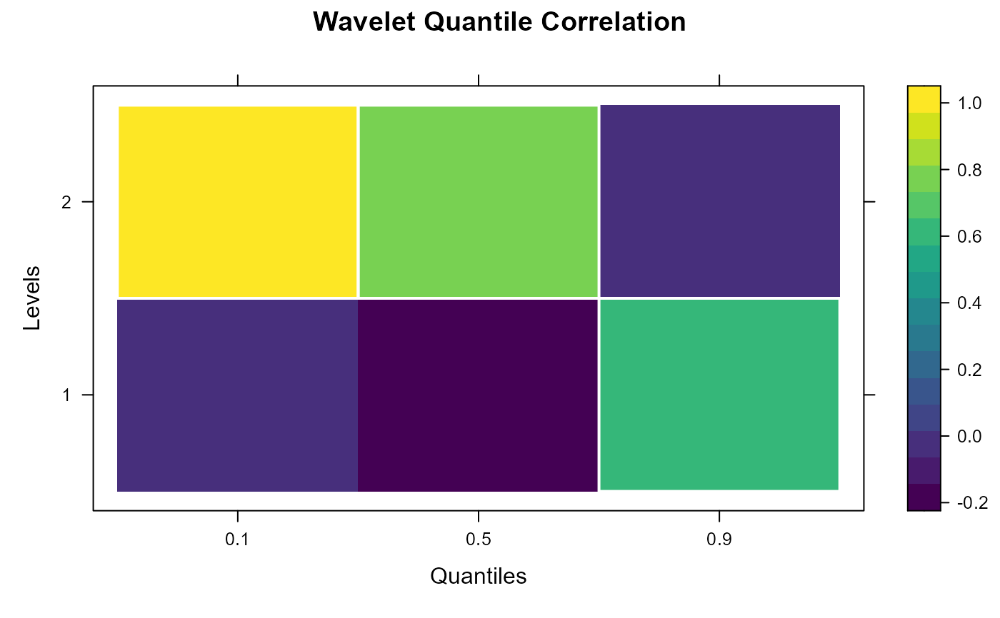

Plot Wavelet Quantile Correlation Heatmap
plot_quantile_heatmap.RdCreate a heatmap of estimated quantile-wavelet correlations with white borders for cells where the estimate lies outside its 95% confidence interval.
Usage
plot_quantile_heatmap(
df,
label_levels = TRUE,
palette = viridisLite::viridis(100)
)Examples
df <- data.frame(
Level = rep(1:2, each = 3),
Quantile = rep(c(0.1, 0.5, 0.9), times = 2),
Estimated_QC = runif(6, -1, 1),
CI_Lower = rep(-0.5, 6),
CI_Upper = rep(0.5, 6)
)
# Use :: for namespace clarity, avoid library() calls
plot_quantile_heatmap(df, label_levels = TRUE, palette = viridisLite::viridis(100))
